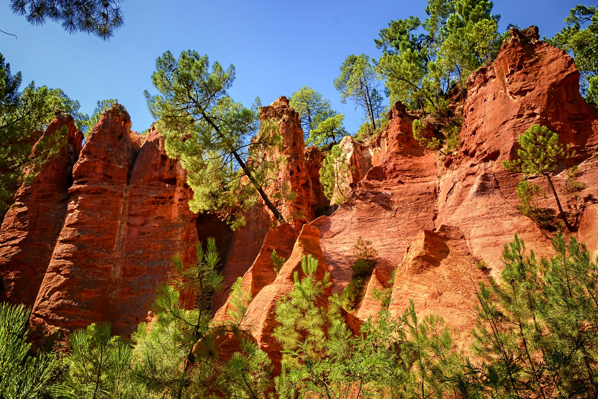
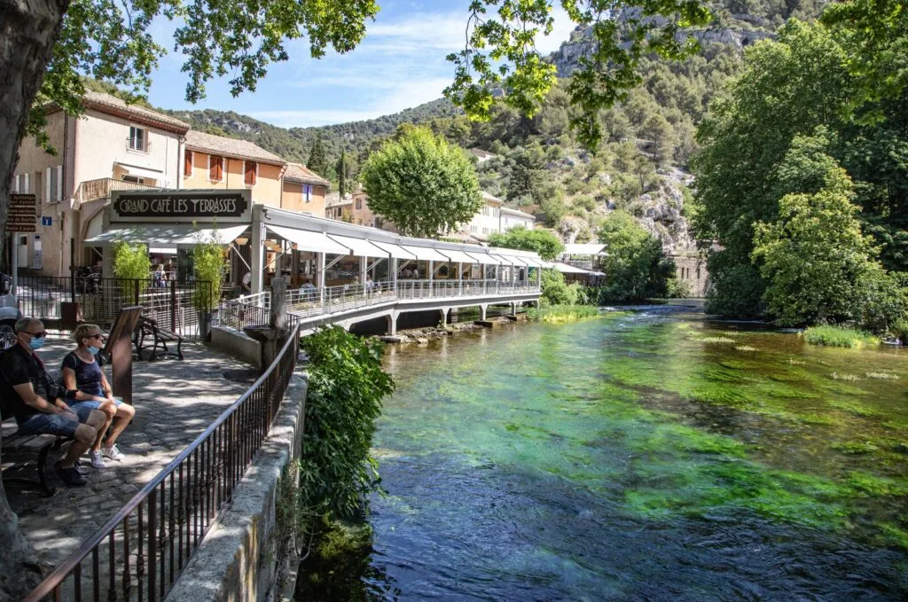
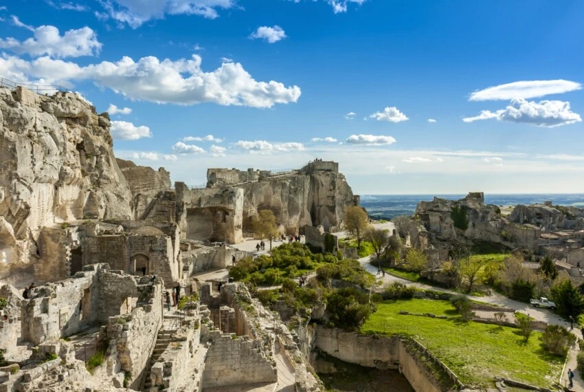
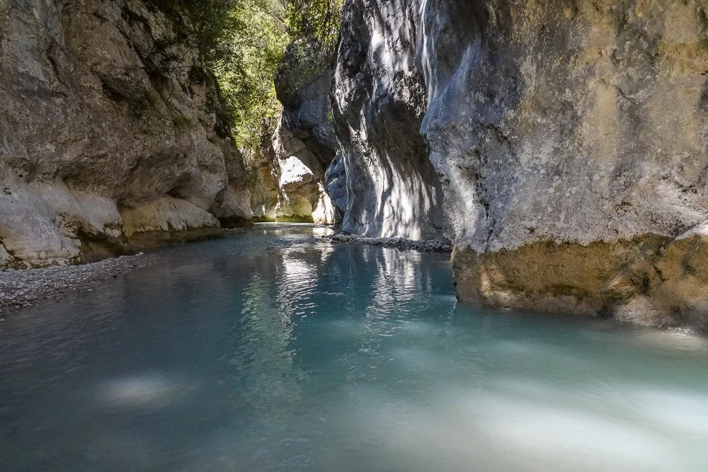
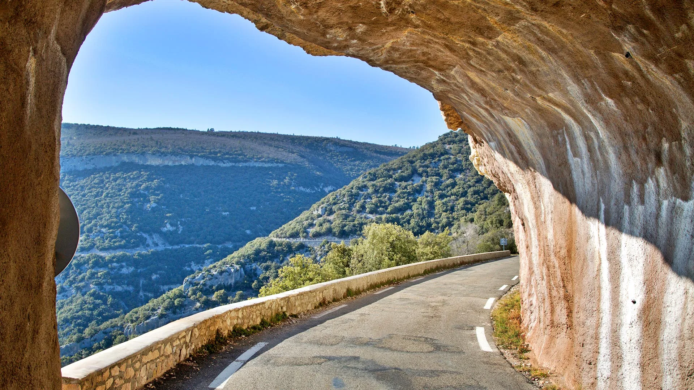

Mont Ventoux
Surnommé le Géant de Provence, le Mont Ventoux culmine à 1 909 mètres et offre une vue spectaculaire sur les Alpes, le Luberon et la vallée du Rhône.
Entre montagnes majestueuses, falaises d'ocre, rivières cristallines et routes panoramiques, la Provence offre une diversité de paysages exceptionnelle à découvrir durant votre séjour.

Surnommé le Géant de Provence, le Mont Ventoux culmine à 1 909 mètres et offre une vue spectaculaire sur les Alpes, le Luberon et la vallée du Rhône.

Situé à Rustrel, ce site unique dévoile des paysages aux teintes rouges, orangées et jaunes façonnés par l'exploitation de l'ocre.

L'une des plus puissantes résurgences d'Europe. Un lieu incontournable mêlant patrimoine naturel et charme provençal.

Perché sur un éperon rocheux au cœur des Alpilles, ce site exceptionnel offre des panoramas remarquables sur la Provence.

Un véritable paradis naturel où l'on progresse dans une rivière fraîche entourée de falaises sauvages.

Cette route panoramique spectaculaire offre l'un des plus beaux points de vue du Vaucluse avec ses falaises vertigineuses.